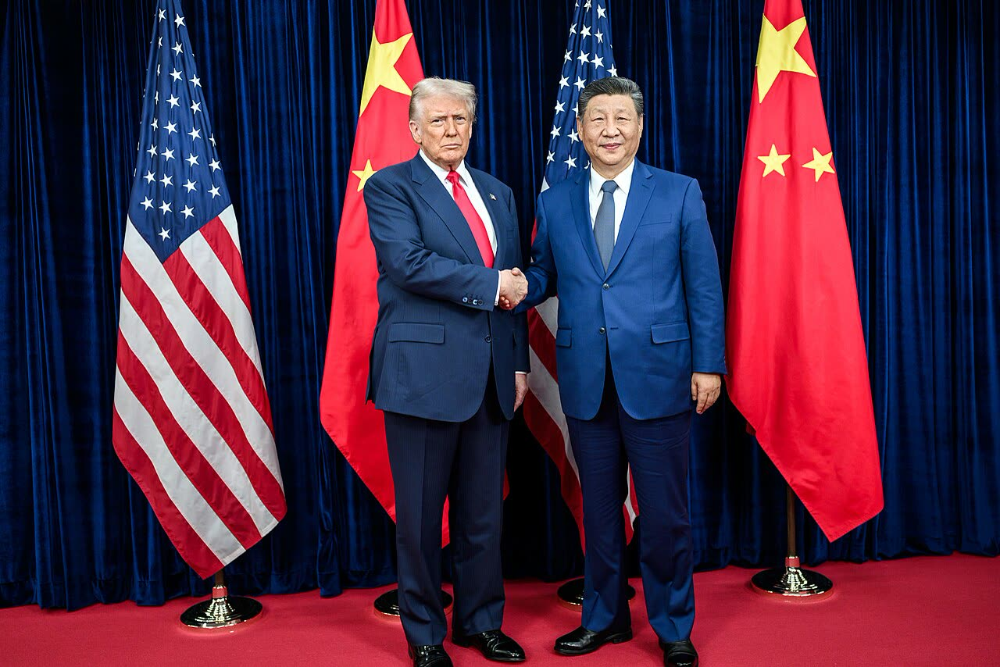

Trump: vertice con Putin e Xi in Cina all'APEC (da confermare)
Un vertice a tre che porti Washington, Mosca e Pechino a parlare di Iran e di energia conviene anche all'Italia, ma finché Pechino e Mosca non confermano l'incontro a tre resta un annuncio.
Redazione Contrappunto · aggiornato il 09.11.2026

.jpg){kind=link}
Domenica 8 novembre il presidente americano Donald Trump ha detto ai giornalisti che andrà in Cina e che uno degli incontri sarà con il russo Vladimir Putin e il cinese Xi Jinping. L'occasione è il vertice dell'APEC, il forum dei paesi del Pacifico, a Shenzhen il 18 e 19 novembre. Per The Hindu sarebbe un «rare trilateral», un incontro a tre raro. Trump ha parlato di disarmo nucleare e, secondo The Hindu, anche della guerra in Iran; Pechino, interpellata oggi, non lo esclude e non lo conferma.
Vedi di più: 4 parole spiegate, cosa si racconta
Cosa si raccontaThe Hindu titola che i tre leader si incontreranno la prossima settimana, dice Trump; la TASS riferisce le parole di Trump e le aggiunge quelle del portavoce del Cremlino. Pechino risponde che è «in contatto con le parti interessate». Il racconto dominante è: l'incontro si fa. [The Hindu] [TASS] [Euronews]
- APEC (Shenzhen, 18-19 novembre)
- Cooperazione economica Asia-Pacifico: gruppo di 21 economie, tra cui Cina, Russia e Stati Uniti, che ogni anno riunisce i leader. Quest'anno ospita la Cina, a Shenzhen (Euronews, TASS).
- Dmitrij Peskov
- Portavoce del Cremlino (TASS, Euronews).
- Guo Jiakun
- Portavoce del ministero degli Esteri cinese: ha risposto alla domanda sul vertice nella conferenza stampa di lunedì 9 novembre (The Hindu).
- Denuclearizzazione
- Nel linguaggio di Trump, negoziare una riduzione delle armi nucleari tra Stati Uniti, Russia e Cina; la Cina ha più volte detto no a trattative a tre sulle armi atomiche (Breitbart scrive che Pechino è diffidente verso quell'idea).
- Trump ha parlato domenica 8 novembre, prima di volare dalla Florida a Washington, di un incontro con Putin e Xi in Cina. Le due agenzie riportano la frase in modo diverso: per la TASS «one of the meetings I think will be with President Putin and President Xi», per The Hindu «One of the meetings will be with President Putin and President Xi», senza «I think».
- Tempi: la TASS scrive «later this month», The Hindu «next week»; sono lo stesso APEC di Shenzhen, 18-19 novembre. Pechino, oggi, non lo esclude: è «in communication with relevant parties».
- Sull'Iran, per The Hindu, Trump ha detto «We're trying to end the war in Iran»; la TASS non riporta la frase. Manca la conferma dell'incontro a tre, non la data dell'APEC.
Due agenzie, due versioni della frase di Trump. TASS: «one of the meetings I think will be with President Putin and President Xi». The Hindu, senza «I think», e poi «We're trying to end the war in Iran». «Later this month» (TASS) e «next week» (The Hindu) indicano lo stesso APEC di Shenzhen, 18-19 novembre. Pechino non smentisce e non conferma; il 3 novembre, scrive Breitbart, la Cina non aveva deciso. Quindi? Un vertice con chi ha voce su Teheran conviene all'Italia, se si parla di energia: è il nostro metro. Ma la data c'è, l'incontro a tre no: l'annuncio è di una sola voce. [1] [2] [3]
La verifica punto per punto3 passaggi, 6 fonti
Qui sotto ogni cosa scritta sopra, una per una, con le fonti. Confermato: lo dice un documento originale o più fonti lette. Plausibile: lo riportano fonti serie, ma non abbiamo letto l'originale. Discordante: le fonti danno numeri diversi, e diciamo quali. Ipotesi e Opinione sono il nostro ragionamento, separato dai fatti.
Cosa ha detto Trump, e quanto
Domenica 8 novembre Trump ha detto ai giornalisti, prima di volare dalla Florida a Washington, che andrà in Cina per l'APEC di Shenzhen (18-19 novembre). Secondo la TASS: «one of the meetings I think will be with President Putin and President Xi, and that'll be interesting», poi «We'll talk a lot of things, including denuclearization». The Hindu riporta la frase senza «I think» («One of the meetings will be with President Putin and President Xi») e aggiunge «We're trying to end the war in Iran»; la TASS non ha quella frase e la pagina di The Hindu è parziale. Le due versioni non sono conciliabili con le sole fonti lette. Per i tempi, la TASS scrive «later this month» e The Hindu «next week» nel titolo e nel testo, dove aggiunge che Trump «will likely meet» i due leader: sono lo stesso vertice APEC. Non è una novità assoluta: il 20 ottobre aveva già detto di essere pronto all'incontro, ma «non tanto per l'Ucraina» (Euronews).
Chi conferma, chi frena, chi tace
Oggi il portavoce cinese Guo Jiakun non ha escluso l'incontro e ha detto che la Cina è «in communication with relevant parties» (The Hindu). Il 3 novembre il ministero parlava di un incontro tra Xi e Putin e non nominava Trump (Anadolu, che cita il Financial Times). Peskov, per la TASS, dice che Russia, Stati Uniti e Cina preparano proposte per l'agenda; il 3 novembre aveva detto che i lavori erano in corso e che la Cina, come ospite, è «la principale forza organizzatrice» (Breitbart). Sempre il 3 novembre il viceministro Rudenko diceva che «no final decision has been made» (Breitbart, citando la TASS). Una fonte del Financial Times dice che Washington e Mosca spingono e Pechino non ha deciso (Anadolu); Steinmeier ha riferito che Xi, interrogato sull'ipotesi, parve confuso e chiese l'origine delle voci (Breitbart, citando l'FT). Per un'analista cinese citata da The Hindu è più probabile uno scambio informale che un vertice formale. Non abbiamo trovato la Casa Bianca.
Cosa cambia per l'Italia
Siamo per il dialogo con Cina e Russia, e il metro è l'interesse italiano: se un vertice a tre riapre la strada alla pace in Iran, a noi e all'Europa conviene sull'energia, e questo vale più della simpatia per una delle parti. Resta un rischio che The Hindu attribuisce agli oppositori: trattare con Mosca scavalcando Kiev e l'Europa. Per noi la risposta non è fermare il vertice, ma chiedere a Roma e a Bruxelles di avere un posto al tavolo sull'energia, invece di leggere il risultato sui giornali. Per ora l'incontro a tre resta una frase di Trump, non una conferma.
Fonti6, tutte con il link
- Trump says his potential meeting with Putin, Xi in China would be interesting (9 novembre 2026) (TASS) · consultata il 09.11.2026
- Ananth Krishnan, U.S., China, Russia leaders to meet next week, says Trump; Beijing says 'in communication with parties' (9 novembre 2026) (The Hindu) · consultata il 09.11.2026
- Kremlin Says Arrangements Underway for Trump-Putin-Xi Meeting in November (3 novembre 2026) (Breitbart) · consultata il 09.11.2026
- Burc Eruygur, Work underway to organize trilateral talks between Putin, Trump, Xi in China: Kremlin (3 novembre 2026) (Anadolu Agency) · consultata il 09.11.2026
- Jeremiah Fisayo-Bambi, Trump says he is open to three-way summit with Putin and Xi in China (20 ottobre 2026) (Euronews) · consultata il 09.11.2026
- Fan Chen, What is the one big thing that could stop Xi, Putin and Trump meeting at Apec? (4 novembre 2026) (South China Morning Post) · consultata il 09.11.2026
Testo preparato con strumenti di intelligenza artificiale e pubblicato senza revisione umana. Come lavoriamo